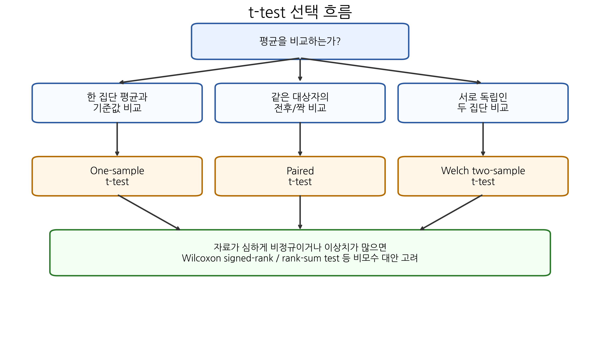
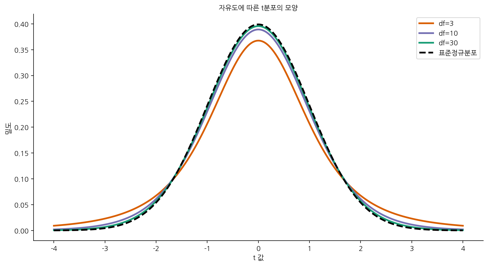
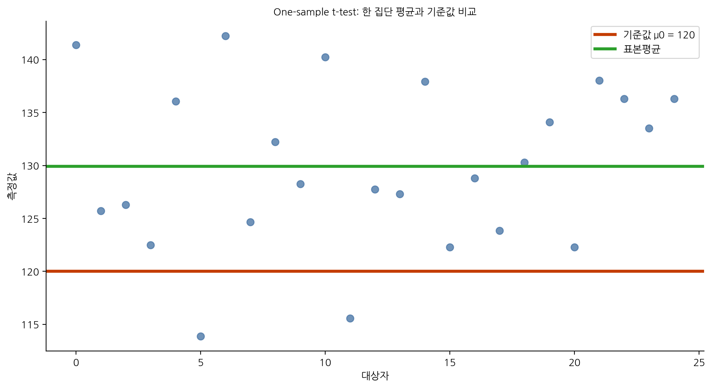
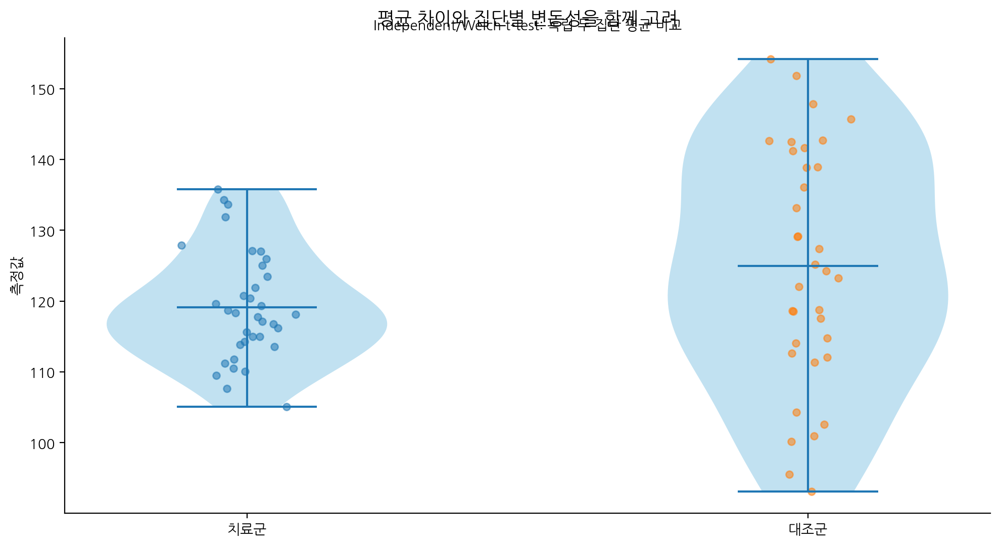
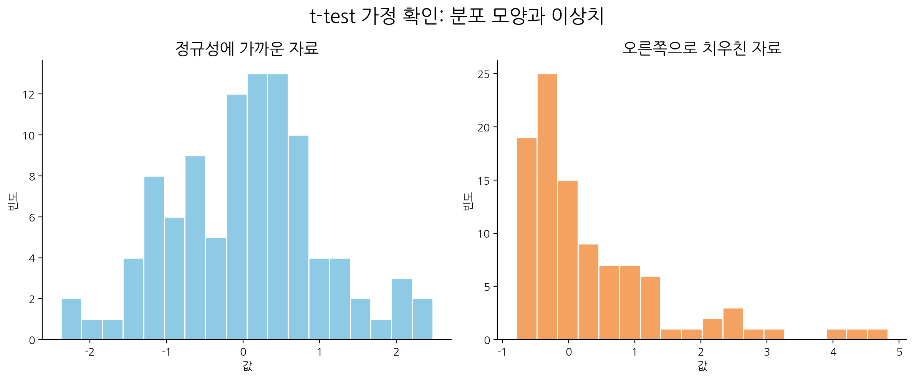
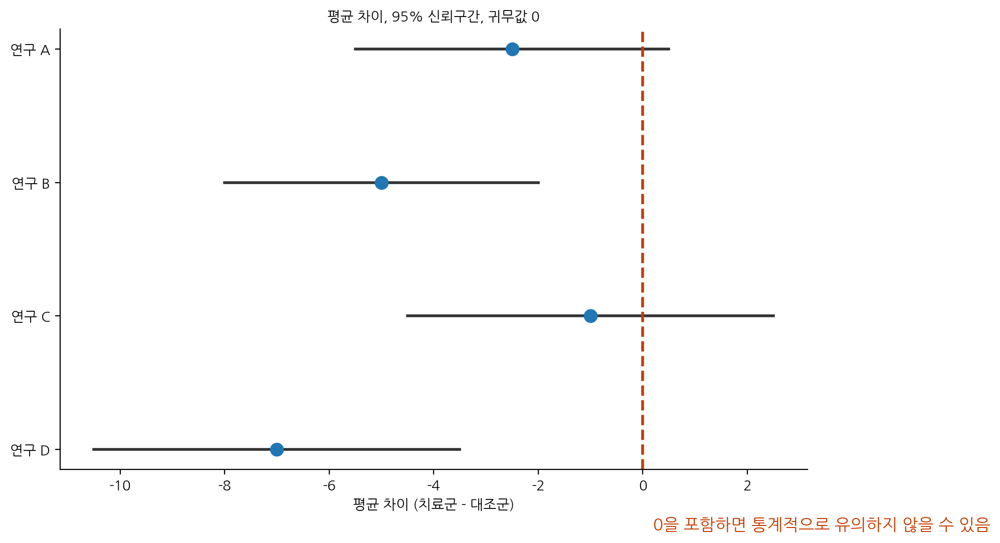

이번 장에서는 평균을 비교하는 대표적인 통계 방법인 t-test를 학습한다. 의학 연구에서는 평균을 비교하는 질문이 매우 자주 등장한다. 예를 들어 혈압약 복용 전후의 평균 혈압이 감소했는지, 신약군과 대조군의 평균 혈당이 다른지, 특정 환자군의 평균 콜레스테롤이 정상 기준값과 다른지, 수술 전후 통증 점수가 감소했는지 등을 평가해야 한다.
이러한 질문은 겉으로는 모두 “평균 비교”처럼 보이지만, 실제 분석에서는 자료 구조가 서로 다르다. 한 집단의 평균을 기준값과 비교하는지, 같은 대상자를 전후로 비교하는지, 서로 독립인 두 집단을 비교하는지에 따라 사용하는 t-test가 달라진다.
따라서 t-test를 배울 때 가장 중요한 것은 공식을 암기하는 것이 아니라 다음 질문에 답할 수 있는 것이다.
이 연구 질문에서 비교해야 하는 평균은 무엇이고, 그 평균 차이의 표준오차는 어떻게 계산되는가?
이번 장에서는 one-sample t-test, paired t-test, independent two-sample t-test, Welch t-test를 차례로 학습한다. 또한 t-test의 가정, p-value와 신뢰구간의 해석, 효과크기, 비모수 대안 검정, R 실습까지 함께 다룬다.

Figure 8.1: t-test 선택 흐름
8.2 핵심 질문
이번 장은 다음 질문을 중심으로 진행된다.
t-test는 어떤 연구 질문에 사용하는가?
one-sample t-test, paired t-test, independent two-sample t-test는 어떻게 다른가?
paired t-test는 왜 “차이값의 one-sample t-test”라고 할 수 있는가?
R의 t.test()가 기본적으로 Welch t-test를 수행한다는 것은 어떤 의미인가?
t-test의 검정통계량은 왜 “차이 / 표준오차” 형태를 가지는가?
p-value가 작다는 것은 평균 차이가 크다는 뜻인가?
통계적으로 유의한 평균 차이가 항상 임상적으로 중요한가?
정규성, 독립성, 등분산성 가정은 어떻게 확인하고 해석해야 하는가?
이상치가 있거나 분포가 심하게 치우친 경우에는 어떻게 해야 하는가?
t-test 결과를 논문 문장으로 어떻게 보고해야 하는가?
8.3 학습목표
이번 수업이 끝나면 학생들은 다음을 할 수 있어야 한다.
평균 비교 연구 질문을 자료 구조에 따라 분류할 수 있다.
one-sample t-test, paired t-test, Welch two-sample t-test를 구분할 수 있다.
각 t-test의 귀무가설과 대립가설을 쓸 수 있다.
검정통계량 \(t\)의 구조를 설명할 수 있다.
표준오차가 t-test에서 어떤 역할을 하는지 설명할 수 있다.
p-value와 95% 신뢰구간을 함께 해석할 수 있다.
등분산 t-test와 Welch t-test의 차이를 설명할 수 있다.
paired data와 independent data를 구분할 수 있다.
정규성, 이상치, 등분산성 가정을 점검할 수 있다.
비모수 대안 검정이 필요한 상황을 설명할 수 있다.
R에서 t.test()와 wilcox.test()를 사용할 수 있다.
t-test 결과를 의학 논문 형식으로 보고할 수 있다.
8.4 평균 비교가 필요한 의학 연구 상황
의학 연구에서 평균 비교는 흔하지만, 모든 평균 비교가 같은 분석은 아니다. 먼저 연구 질문을 자료 구조에 맞게 분류해야 한다.
연구 질문
자료 구조
적절한 검정
특정 환자군의 평균 혈압이 120 mmHg와 다른가?
한 집단 평균과 기준값 비교
One-sample t-test
치료 전후 혈압이 감소했는가?
같은 대상자의 전후 측정
Paired t-test
신약군과 위약군의 평균 혈당이 다른가?
서로 독립인 두 집단
Welch two-sample t-test
남성과 여성의 평균 BMI가 다른가?
서로 독립인 두 집단
Welch two-sample t-test
치료 전후 통증 점수 변화량이 0보다 작은가?
같은 대상자의 변화량
Paired t-test
평균 검사 수치가 임상 기준값보다 높은가?
한 집단 평균과 기준값 비교
One-sample t-test
평균 비교에서 가장 먼저 확인해야 하는 것은 측정값이 서로 짝을 이루는지이다. 같은 환자에게서 치료 전과 치료 후를 측정했다면 두 값은 독립이 아니다. 반대로 신약군과 위약군처럼 서로 다른 대상자들로 구성된 두 집단은 독립 표본이다.
8.5 t-test의 기본 아이디어
t-test의 핵심은 관찰된 평균 차이를 그 차이의 불확실성과 비교하는 것이다. 일반적으로 검정통계량은 다음과 같은 구조를 가진다.
검정통계량 \(t\)는 단순히 “차이가 몇인가?”를 보는 것이 아니라 “그 차이가 표준오차 몇 개만큼 떨어져 있는가?”를 본다. 즉 t-test는 평균 차이를 표준오차 단위로 표준화한 검정이다.
8.6 t분포와 자유도
t-test에서 검정통계량은 정규분포가 아니라 t분포(t distribution)를 따른다. 그 이유는 모집단 표준편차 \(\sigma\)를 알지 못하기 때문에 표본 표준편차 \(s\)로 대체하기 때문이다.
정규분포 기반의 z통계량은 다음과 같다.
\[z =
\frac{\bar{x}-\mu_0}{\sigma/\sqrt{n}}\]
하지만 실제 연구에서는 모집단 표준편차 \(\sigma\)를 알 수 없는 경우가 대부분이다. 그래서 표본 표준편차 \(s\)를 사용한다.
\[t =
\frac{\bar{x}-\mu_0}{s/\sqrt{n}}\]
표본 표준편차를 사용하면 불확실성이 더 커진다. 이 추가적인 불확실성을 반영한 분포가 t분포이다.
t분포는 자유도(degrees of freedom)에 따라 모양이 달라진다. 자유도가 작으면 꼬리가 두껍고, 자유도가 커질수록 표준정규분포에 가까워진다.

Figure 8.3: 자유도에 따른 t분포의 모양
Note자유도란 무엇인가?
자유도는 통계량을 계산할 때 독립적으로 변할 수 있는 정보의 개수이다. 예를 들어 표본평균을 이미 알고 있는 상태에서 \(n\)개의 편차를 모두 자유롭게 정할 수는 없다. 편차들의 합은 반드시 0이 되어야 하므로 마지막 하나는 자동으로 결정된다. 그래서 표본분산과 one-sample t-test에서는 자유도가 \(n-1\)이다.
8.7 t-test의 종류
t-test는 평균 비교 상황에 따라 여러 종류로 나뉜다.
검정
비교 대상
자료 구조
대표 예
One-sample t-test
한 집단 평균 vs 기준값
한 집단
평균 혈압이 120과 다른가?
Paired t-test
차이값 평균 vs 0
같은 대상자의 두 측정값
치료 전후 혈압이 변했는가?
Independent two-sample t-test
두 독립 집단 평균
서로 다른 두 집단
신약군과 위약군 평균이 다른가?
Welch t-test
두 독립 집단 평균
분산이 다를 수 있는 두 집단
일반적인 두 집단 평균 비교
실무에서는 두 독립 집단 평균 비교에서 Welch t-test를 기본 선택으로 사용하는 것이 안전한 경우가 많다. Welch t-test는 두 집단의 분산이 같다는 강한 가정을 요구하지 않기 때문이다.
8.8 One-sample t-test
8.8.1 사용 상황
One-sample t-test는 한 집단의 평균이 특정 기준값과 다른지 평가할 때 사용한다.
예를 들어 다음과 같은 질문에 사용할 수 있다.
특정 환자군의 평균 수축기 혈압이 120 mmHg와 다른가?
평균 BMI가 25와 다른가?
평균 공복혈당이 100 mg/dL보다 높은가?
특정 검사 수치의 평균이 정상 기준값과 다른가?

Figure 8.4: One-sample t-test: 한 집단 평균과 기준값 비교
8.8.2 가설
표본평균을 \(\bar{x}\), 비교 기준값을 \(\mu_0\)라고 하자. 한 집단 평균이 기준값과 다른지 검정하려면 다음 가설을 세운다.
귀무가설은 다음과 같다.
\[H_0: \mu = \mu_0\]
대립가설은 연구 질문에 따라 달라질 수 있다.
양측검정:
\[H_1: \mu \neq \mu_0\]
오른쪽 단측검정:
\[H_1: \mu > \mu_0\]
왼쪽 단측검정:
\[H_1: \mu < \mu_0\]
대부분의 의학 연구에서는 사전에 명확한 방향성이 있고 반대 방향의 차이를 무시할 수 있는 특별한 이유가 없다면 양측검정을 사용하는 것이 일반적이다.
8.8.3 검정통계량
One-sample t-test의 검정통계량은 다음과 같다.
\[t =
\frac{\bar{x}-\mu_0}{s/\sqrt{n}}\]
여기서
\(\bar{x}\)는 표본평균
\(\mu_0\)는 귀무가설에서의 기준값
\(s\)는 표본 표준편차
\(n\)은 표본 크기
\(s/\sqrt{n}\)은 표본평균의 표준오차
이다.
자유도는 다음과 같다.
\[df=n-1\]
8.8.4 계산 예제
25명의 환자에서 수축기 혈압의 표본평균이 130 mmHg, 표본 표준편차가 10 mmHg라고 하자. 이 환자군의 평균 혈압이 120 mmHg와 다른지 검정한다.
paired t-test에서 정규성 가정은 치료 전 값과 치료 후 값 각각에 대한 정규성이 아니라 차이값\(d_i\)의 정규성에 관한 것이다.
8.9.4 예제 자료
10명의 환자에서 치료 전후 혈압을 측정했다고 하자.
환자
치료 전
치료 후
차이: 후-전
1
140
132
-8
2
135
130
-5
3
150
140
-10
4
145
138
-7
5
138
134
-4
6
142
136
-6
7
136
130
-6
8
148
140
-8
9
144
137
-7
10
139
135
-4
평균 차이 \(\bar{d}\)가 음수라면 치료 후 혈압이 치료 전보다 낮아졌다는 뜻이다. paired t-test는 이 평균 감소량이 우연으로 설명될 수 있는지 평가한다.
8.9.5 잘못된 분석: independent t-test를 쓰는 경우
치료 전후 자료에 independent t-test를 사용하면 문제가 된다. 같은 환자의 치료 전후 값은 서로 연관되어 있다. 예를 들어 원래 혈압이 높은 사람은 치료 후에도 상대적으로 높은 값을 가질 가능성이 있다. 이런 짝 구조를 무시하면 표준오차를 잘못 계산하게 된다.
분석 방법
짝 구조 반영 여부
해석
Paired t-test
반영함
각 개인의 변화량을 분석
Independent t-test
반영하지 않음
치료 전 집단과 치료 후 집단을 서로 다른 사람처럼 취급
따라서 전후 비교에서는 paired t-test를 사용해야 한다.
8.10 Independent two-sample t-test와 Welch t-test
8.10.1 사용 상황
Independent two-sample t-test는 서로 독립적인 두 집단의 평균을 비교할 때 사용한다.
예를 들어 다음과 같은 상황이다.
신약군 vs 위약군
치료 A군 vs 치료 B군
남성 vs 여성
흡연자 vs 비흡연자
질병군 vs 대조군
두 집단의 대상자는 서로 겹치지 않아야 한다.

Figure 8.6: Independent/Welch t-test: 독립 두 집단 평균 비교
8.10.2 가설
두 집단의 모평균을 \(\mu_1\), \(\mu_2\)라고 하자.
귀무가설은 다음과 같다.
\[H_0: \mu_1 = \mu_2\]
또는 평균 차이로 표현하면 다음과 같다.
\[H_0: \mu_1-\mu_2=0\]
양측 대립가설은 다음과 같다.
\[H_1: \mu_1 \neq \mu_2\]
또는
\[H_1: \mu_1-\mu_2 \neq 0\]
이다.
8.10.3 등분산 t-test
전통적인 independent two-sample t-test는 두 집단의 모분산이 같다고 가정한다.
set.seed(123)treatment <-rnorm(30, mean =120, sd =10)control <-rnorm(30, mean =126, sd =12)t.test(treatment, control)
Welch Two Sample t-test
data: treatment and control
t = -3.3632, df = 57.974, p-value = 0.00137
alternative hypothesis: true difference in means is not equal to 0
95 percent confidence interval:
-13.736395 -3.485801
sample estimates:
mean of x mean of y
119.5290 128.1401
등분산 t-test를 수행하려면 다음과 같이 입력한다.
t.test(treatment, control, var.equal =TRUE)
Two Sample t-test
data: treatment and control
t = -3.3632, df = 58, p-value = 0.00137
alternative hypothesis: true difference in means is not equal to 0
95 percent confidence interval:
-13.73635 -3.48585
sample estimates:
mean of x mean of y
119.5290 128.1401
Tip실무 팁
두 독립 집단 평균 비교에서는 특별한 이유가 없다면 Welch t-test를 기본으로 사용하는 것이 안전하다. Welch t-test는 등분산인 경우에도 크게 손해가 없고, 분산이 다를 때는 등분산 t-test보다 더 안정적이다.
8.11 t-test의 가정
t-test를 사용할 때는 다음 가정을 고려해야 한다.
8.11.1 독립성
관측값들이 서로 독립이어야 한다. 독립성은 통계 검정의 가장 중요한 가정 중 하나이다.
독립성 위반의 예는 다음과 같다.
한 환자가 여러 번 포함된 경우
같은 가족 구성원이 여러 명 포함된 경우
같은 병실 또는 같은 병원 내 환자들이 강하게 연관된 경우
군집 표본인데 일반 t-test를 사용한 경우
독립성은 히스토그램이나 정규성 검정만으로 확인할 수 없다. 연구 설계와 자료 수집 과정을 통해 판단해야 한다.
8.11.2 연속형 결과변수
t-test는 평균을 비교하는 검정이므로 결과변수는 대체로 연속형이어야 한다.
적절한 예:
혈압
혈당
체중
콜레스테롤
검사 수치
통증 점수
부적절한 예:
사망 여부
치료 성공 여부
질병 유무
양성/음성 검사 결과
이진 결과변수는 평균 비교가 아니라 비율 비교, 카이제곱검정, Fisher의 정확검정, 로지스틱 회귀 등을 고려해야 한다.
8.11.3 정규성
t-test는 평균 또는 평균 차이가 정규분포에 가깝다는 가정에 기반한다.
one-sample t-test: 원자료가 정규분포에 가깝거나 표본평균이 정규근사 가능해야 한다.
paired t-test: 차이값이 정규분포에 가까워야 한다.
independent t-test: 각 집단의 분포가 심하게 비정규가 아니어야 한다.
표본 크기가 충분히 크면 중심극한정리 덕분에 t-test는 정규성 위반에 어느 정도 robust하다. 하지만 표본 크기가 작고 자료가 심하게 치우쳐 있거나 이상치가 많다면 t-test 결과를 조심해서 해석해야 한다.

Figure 8.7: t-test 가정 확인: 분포 모양과 이상치
8.11.4 등분산성
전통적인 independent two-sample t-test는 두 집단의 분산이 같다고 가정한다. 그러나 Welch t-test는 이 가정을 완화한다.
따라서 두 집단의 표준편차가 매우 다르거나 표본 크기도 서로 다르다면 Welch t-test가 더 적절하다.
상황
권장 방법
두 집단 분산이 비슷하고 표본 크기도 비슷함
등분산 t-test 또는 Welch t-test
두 집단 분산이 다를 가능성이 있음
Welch t-test
두 집단 표본 크기가 크게 다름
Welch t-test
분포가 심하게 치우치고 이상치가 많음
변환, robust 방법, 비모수 검정 고려
8.12 정규성 확인 방법
정규성은 다음 방법으로 확인할 수 있다.
방법
설명
주의점
히스토그램
분포 모양을 확인
표본 크기가 작으면 판단이 어려움
Q-Q plot
정규분포와의 차이를 시각적으로 확인
꼬리 부분의 이탈을 확인해야 함
Shapiro-Wilk test
정규성에 대한 검정
표본 크기에 민감함
이상치 확인
boxplot, scatter plot
평균과 표준편차에 큰 영향 가능
정규성 검정의 p-value만으로 결론을 내리면 안 된다. 표본 크기가 매우 크면 아주 작은 비정규성도 유의하게 나올 수 있고, 표본 크기가 작으면 비정규성을 발견할 힘이 부족할 수 있다. 따라서 시각화, 표본 크기, 연구 질문, 이상치 여부를 함께 고려해야 한다.
8.13 비모수 대안 검정
자료가 심하게 치우쳐 있거나 이상치가 많으면 비모수 검정을 고려할 수 있다. 비모수 검정은 평균보다 순위(rank)에 기반한다.
t-test
비모수 대안
사용 상황
One-sample t-test
One-sample Wilcoxon signed-rank test
한 집단 위치가 기준값과 다른지
Paired t-test
Wilcoxon signed-rank test
짝지어진 차이값 비교
Independent t-test
Wilcoxon rank-sum test
두 독립 집단 비교
단, 비모수 검정은 “평균 차이”를 직접 검정하는 것이 아니다. 주로 분포 위치의 차이나 순위의 차이를 평가한다. 따라서 연구 질문이 평균 차이에 관한 것인지, 중앙값 또는 분포 위치에 관한 것인지 명확히 해야 한다.
8.14 효과크기
t-test 결과를 해석할 때 p-value만 보고 결론을 내리면 안 된다. p-value는 표본 크기에 민감하다. 표본 크기가 매우 크면 임상적으로 작은 차이도 통계적으로 유의할 수 있고, 표본 크기가 작으면 임상적으로 중요한 차이도 유의하지 않을 수 있다.
따라서 평균 차이의 크기, 95% 신뢰구간, 효과크기를 함께 보고해야 한다.
8.14.1 평균 차이
가장 직접적인 효과크기는 평균 차이이다.
\[\bar{x}_1-\bar{x}_2\]
예를 들어 신약군 평균 혈압이 120, 대조군 평균 혈압이 126이라면 평균 차이는 다음과 같다.
\[120-126=-6\]
이는 신약군의 평균 혈압이 대조군보다 6 mmHg 낮다는 뜻이다.
8.14.2 Cohen의 d
서로 다른 척도의 평균 차이를 비교하거나 표준화된 효과크기를 제시할 때 Cohen의 \(d\)를 사용할 수 있다.
두 독립 집단에서 Cohen의 \(d\)는 다음과 같이 계산할 수 있다.
\[d =
\frac{\bar{x}_1-\bar{x}_2}{s_p}\]
여기서 \(s_p\)는 pooled standard deviation이다.
일반적인 해석 기준은 다음과 같다.
Cohen’s d
대략적 해석
0.2
작은 효과
0.5
중간 정도 효과
0.8
큰 효과
하지만 이 기준은 절대적인 것이 아니다. 임상적 중요성은 질병, 치료, 부작용, 비용, 환자에게 주는 의미를 함께 고려해야 한다.

Figure 8.8: 평균 차이, 95% 신뢰구간, 귀무값 0
8.15 p-value와 신뢰구간 함께 해석하기
t-test 결과에는 보통 p-value와 95% 신뢰구간이 함께 제시된다.
예를 들어 평균 차이에 대한 95% 신뢰구간이 다음과 같다고 하자.
\[-9.5 \leq \mu_1-\mu_2 \leq -2.5\]
이 구간은 0을 포함하지 않는다. 따라서 양측검정에서 유의수준 0.05 기준으로 통계적으로 유의하다.
반대로 다음과 같은 신뢰구간을 생각해 보자.
\[-6.0 \leq \mu_1-\mu_2 \leq 1.2\]
이 구간은 0을 포함한다. 따라서 양측검정에서 유의수준 0.05 기준으로 통계적으로 유의하지 않을 수 있다.
중요한 것은 신뢰구간이 단순히 유의성 여부만 알려주는 것이 아니라 가능한 효과의 범위를 보여준다는 점이다.
8.16 t-test 결과 해석 체크리스트
t-test 결과를 해석할 때는 다음을 함께 확인해야 한다.
어떤 평균을 비교했는가?
자료 구조는 one-sample, paired, independent 중 무엇인가?
평균 차이의 방향과 크기는 무엇인가?
95% 신뢰구간은 어디에서 어디까지인가?
신뢰구간이 임상적으로 중요한 차이를 포함하는가?
p-value는 얼마인가?
표본 크기는 충분한가?
정규성 또는 이상치 문제가 있는가?
두 독립 집단 비교라면 Welch t-test를 사용했는가?
결과가 통계적으로 유의하더라도 임상적으로 의미 있는가?
8.17 R 실습: One-sample t-test
다음은 20명의 환자에서 측정한 수축기 혈압 자료이다. 평균 혈압이 120 mmHg와 다른지 검정한다.
One Sample t-test
data: blood_pressure
t = 12.334, df = 19, p-value = 1.626e-10
alternative hypothesis: true mean is not equal to 120
95 percent confidence interval:
130.9601 135.4399
sample estimates:
mean of x
133.2
결과에서 확인해야 할 것은 다음과 같다.
표본평균
95% 신뢰구간
p-value
평균이 120과 통계적으로 유의하게 다른지
평균 차이가 임상적으로도 의미 있는지
8.18 R 실습: 단측검정
평균 혈압이 120보다 높은지 검정하고 싶다면 오른쪽 단측검정을 사용할 수 있다.
t.test(blood_pressure, mu =120, alternative ="greater")
One Sample t-test
data: blood_pressure
t = 12.334, df = 19, p-value = 8.131e-11
alternative hypothesis: true mean is greater than 120
95 percent confidence interval:
131.3495 Inf
sample estimates:
mean of x
133.2
평균 혈압이 120보다 낮은지 검정하고 싶다면 다음과 같이 한다.
t.test(blood_pressure, mu =120, alternative ="less")
One Sample t-test
data: blood_pressure
t = 12.334, df = 19, p-value = 1
alternative hypothesis: true mean is less than 120
95 percent confidence interval:
-Inf 135.0505
sample estimates:
mean of x
133.2
단측검정은 분석 전에 연구 가설로 명확히 정해져 있어야 한다. 데이터를 본 뒤 방향을 정하는 것은 적절하지 않다.
Paired t-test
data: after and before
t = -10.817, df = 9, p-value = 1.855e-06
alternative hypothesis: true mean difference is not equal to 0
95 percent confidence interval:
-7.859387 -5.140613
sample estimates:
mean difference
-6.5
paired t-test 결과는 차이값의 평균이 0과 다른지 평가한다.
차이값을 직접 one-sample t-test로 분석해도 같은 결과를 얻는다.
t.test(difference, mu =0)
One Sample t-test
data: difference
t = -10.817, df = 9, p-value = 1.855e-06
alternative hypothesis: true mean is not equal to 0
95 percent confidence interval:
-7.859387 -5.140613
sample estimates:
mean of x
-6.5
set.seed(123)treatment <-rnorm(30, mean =120, sd =10)control <-rnorm(30, mean =126, sd =12)mean(treatment)
[1] 119.529
mean(control)
[1] 128.1401
sd(treatment)
[1] 9.810307
sd(control)
[1] 10.02153
t.test(treatment, control)
Welch Two Sample t-test
data: treatment and control
t = -3.3632, df = 57.974, p-value = 0.00137
alternative hypothesis: true difference in means is not equal to 0
95 percent confidence interval:
-13.736395 -3.485801
sample estimates:
mean of x mean of y
119.5290 128.1401
R의 기본 설정은 Welch t-test이다.
8.22 R 실습: 등분산 t-test와 Welch t-test 비교
등분산을 가정하려면 var.equal = TRUE를 사용한다.
t.test(treatment, control, var.equal =TRUE)
Two Sample t-test
data: treatment and control
t = -3.3632, df = 58, p-value = 0.00137
alternative hypothesis: true difference in means is not equal to 0
95 percent confidence interval:
-13.73635 -3.48585
sample estimates:
mean of x mean of y
119.5290 128.1401
Shapiro-Wilk normality test
data: treatment
W = 0.97894, p-value = 0.7966
shapiro.test(control)
Shapiro-Wilk normality test
data: control
W = 0.98662, p-value = 0.9614
하지만 정규성 검정의 p-value만으로 판단하지 말고, Q-Q plot과 표본 크기, 이상치 여부를 함께 고려해야 한다.
8.25 R 실습: 비모수 검정
자료가 심하게 치우쳐 있거나 이상치가 많다면 Wilcoxon 검정을 고려할 수 있다.
8.25.1 Paired data
wilcox.test(after, before, paired =TRUE)
Wilcoxon signed rank exact test
data: after and before
V = 0, p-value = 0.001953
alternative hypothesis: true location shift is not equal to 0
8.25.2 Independent data
wilcox.test(treatment, control)
Wilcoxon rank sum exact test
data: treatment and control
W = 243, p-value = 0.001894
alternative hypothesis: true location shift is not equal to 0
비모수 검정 결과는 t-test 결과와 해석 대상이 다를 수 있으므로, 단순히 “t-test의 대체품”으로만 생각해서는 안 된다.
8.26 R 실습: 이상치가 t-test에 미치는 영향
평균은 이상치에 민감하다. 다음 예제를 보자.
set.seed(123)group_a <-rnorm(20, mean =100, sd =10)group_b <-rnorm(20, mean =105, sd =10)t.test(group_a, group_b)
Welch Two Sample t-test
data: group_a and group_b
t = -1.0742, df = 37.082, p-value = 0.2897
alternative hypothesis: true difference in means is not equal to 0
95 percent confidence interval:
-8.863821 2.721440
sample estimates:
mean of x mean of y
101.4162 104.4874
group_b_outlier <-c(group_b, 180)mean(group_b)
[1] 104.4874
mean(group_b_outlier)
[1] 108.0833
t.test(group_a, group_b_outlier)
Welch Two Sample t-test
data: group_a and group_b_outlier
t = -1.4627, df = 30.72, p-value = 0.1537
alternative hypothesis: true difference in means is not equal to 0
95 percent confidence interval:
-15.966803 2.632749
sample estimates:
mean of x mean of y
101.4162 108.0833
wilcox.test(group_a, group_b_outlier)
Wilcoxon rank sum exact test
data: group_a and group_b_outlier
W = 165, p-value = 0.2487
alternative hypothesis: true location shift is not equal to 0
이상치가 들어가면 평균, 표준편차, t-test 결과가 크게 달라질 수 있다. 이상치가 단순 입력 오류인지, 실제로 중요한 극단값인지 확인해야 한다.